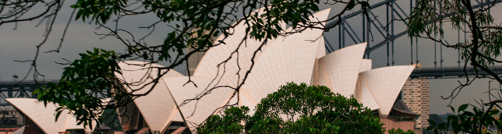

Tu guía de viajes personalizada
Tokio, la capital de Japón, es una metrópolis moderna y dinámica que combina la tradición con la innovación. Esta ciudad bulliciosa ofrece una experiencia única con su animada vida urbana, sus rascacielos futuristas, su deliciosa comida callejera y su cultura única. Algunos lugares destacados incluyen el famoso cruce de Shibuya, el Templo Senso-ji en Asakusa y el mercado de pescado de Tsukiji. Los amantes de la tecnología también pueden disfrutar de la experiencia en los distritos de Akihabara y Odaiba.
Roma, la "Ciudad Eterna", es conocida por su impresionante patrimonio histórico y arquitectónico. Esta ciudad italiana alberga maravillas como el Coliseo, el Foro Romano y el Vaticano, que incluye la Basílica de San Pedro y la Capilla Sixtina. Pasear por las calles empedradas de Roma es como viajar en el tiempo, y podrás disfrutar de la deliciosa comida italiana y sumergirte en su encantadora atmósfera.
Sydney es una vibrante ciudad costera que combina hermosas playas, una icónica Ópera, impresionantes parques y una emocionante vida urbana. Algunos lugares destacados incluyen la Ópera de Sídney, el Puente del Puerto de Sídney y la famosa playa de Bondi. Los visitantes también pueden explorar el animado barrio de The Rocks, disfrutar de la escena culinaria multicultural y realizar paseos en barco por el puerto para disfrutar de las vistas panorámicas.